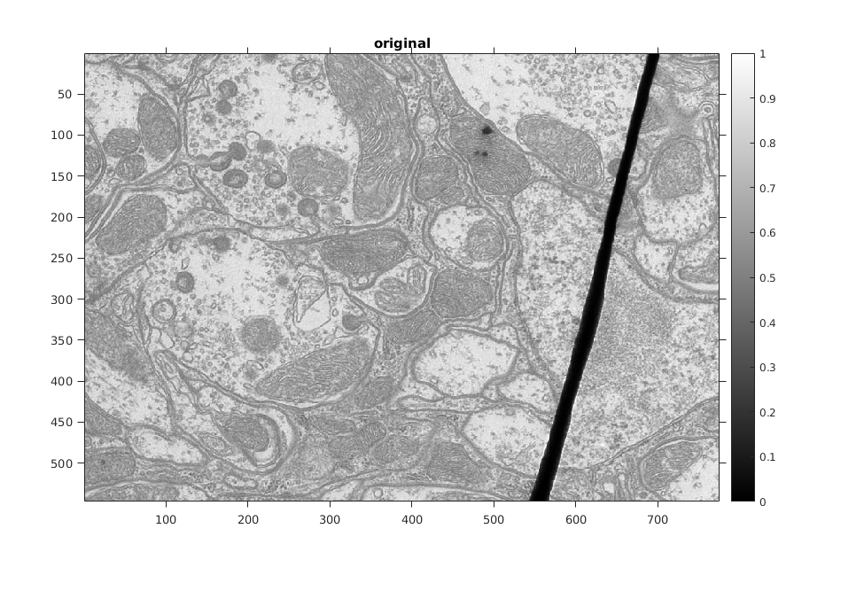
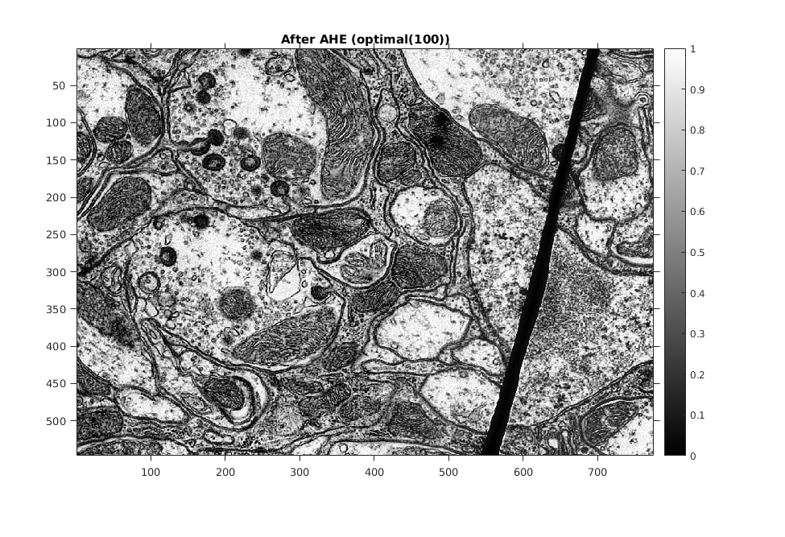
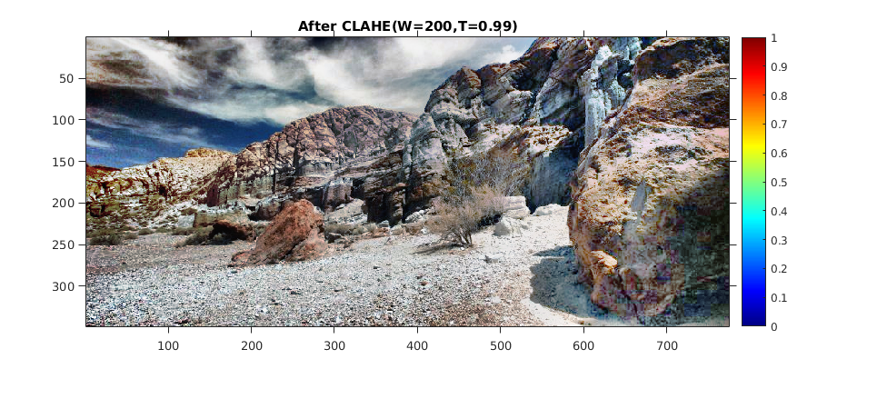

Contents
MyMainScript
clc;
clear;
close all;
tic;
Loading images
im1 = imread('../data/barbara.png');
im2 = imread('../data/TEM.png');
im3 = imread('../data/canyon.png');
im4 = imread('../data/retina.png');
im5 = imread('../data/church.png');
im6 = imread('../data/retinaMask.png');
im7 = imread('../data/retinaRef.png');
im8 = imread('../data/retinaRefMask.png');
Linear Contrast Enhancing - barbara
Formula used I_new = ((I_old - I_min) / (I_max- I_min) )*255
my_display(im1,'original');
I = myLinearContrastStretching(im1);
my_display(I,'stretched');
Linear Contrast Enhancing - TEM
my_display(im2,'original');
I = myLinearContrastStretching(im2);
my_display(I,'stretched');

Linear Contrast Enhancing - canyon
my_display(im3,'original');
I = myLinearContrastStretching(im3);
my_display(I,'stretched');
Linear Contrast Enhancing - church
The image given is better than the image obtained using Linear Contrast
Enhancing(LCE). By doing LCE darker regions turned more darker(reduction in contrast as well)
and hence the image became much more difficult to understand.
my_display(im5,'original');
I = myLinearContrastStretching(im5);
my_display(I,'stretched');
HE - barbara
my_display(im1,'original');
I = myHE(im1);
my_display(I,'After HE');
HE - TEM
my_display(im2,'original');
I = myHE(im2);
my_display(I,'After HE');
HE - canyon
my_display(im3,'original');
I = myHE(im3);
my_display(I,'After HE');
HE - church
In this image clearly HE did much better than LCE. Definately HE would be preffered to enhance contrast
rather than LCE.
my_display(im5,'original');
I = myHE(im5);
my_display(I,'After HE');
HM - Retina
Retina looked more realistic using HM compared to HE.
Retina after HM and given retina are very simmilar.
my_display(im4,'original');
B = imhist(im6);
for k=1:size(im4,3)
A = imhist(im4(:,:,k));
A(1) = A(1) - B(1);
A = cumsum(A);
A = A/A(256);
for i=1:size(im4,1)
im(i,:,k) = A(im4(i,:,k)+1)*255;
end
x= im(:,:,k).*im6;
Iy(:,:,k) = x;
end
my_display(Iy,'After HE');
I = myHM(im4,im7,im6,im8);
my_display(I,'After HM');
AHE - barbara
my_display(im1,'original');
I = myAHE(im1,300);
my_display(I,'After AHE (large window size (300))');
I = myAHE(im1,150);
my_display(I,'After AHE (optimal 150)');
I = myAHE(im1,25);
my_display(I,'After AHE (small window size(25))');

AHE - TEM
my_display(im2,'original');
I = myAHE(im2,300);
my_display(I,'After AHE (large window size (300))');
I = myAHE(im2,100);
my_display(I,'After AHE (optimal(100))');
I = myAHE(im2,25);
my_display(I,'After AHE (small window size(25))');


AHE - canyon
my_display(im3,'original');
I = myAHE(im3,500);
my_display(I,'After AHE (large window size(500)');
I = myAHE(im3,250);
my_display(I,'After AHE (optimal (250))');
I = myAHE(im3,50);
my_display(I,'After AHE (small window size(50))');
CLAHE - barbara
my_display(im1,'original');
I = myCLAHE(im1,150,0.96);
my_display(I,'After CLAHE(W=150,T=0.96)');
I = myCLAHE(im1,150,0.48);
my_display(I,'After CLAHE(W=150,T=0.48)');
CLAHE - TEM
my_display(im2,'original');
I = myCLAHE(im2,100,0.98);
my_display(I,'After CLAHE(W=100,T=0.98)');
I = myCLAHE(im2,100,0.49);
my_display(I,'After CLAHE(W=100,T=0.49)');
MEvent. CASE!


CLAHE - canyon
my_display(im3,'original');
I = myCLAHE(im3,200,0.99);
my_display(I,'After CLAHE(W=200,T=0.99)');
I = myCLAHE(im3,200,0.49);
my_display(I,'After CLAHE(W=200,T=0.49)');
MEvent. CASE!

toc;
Elapsed time is 668.000481 seconds.